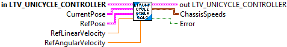

Returns true if the pose error is within tolerance of the reference.
Inputs:
- LTV Unicycle Controller -- Data cluster
Outputs:
- At Reference -- True if the pose error is within tolerance of the reference.

Returns the linear and angular velocity outputs of the LTV controller.
Inputs:
- in LTV Unicycle Controller -- Controller data cluster
- currentPose -- The current pose.
- poseRef -- The desired pose. (Setpont)
- linearVelocityRef -- The desired linear velocity in meters per second. (Feedforward)
- angularVelocityRef -- The desired angular velocity in radians per second. (Feedforward)
Outputs:
- out LTV Unicycle Controller -- Updatated data cluster
- Chassis Speeds -- The linear and angular velocity outputs of the LTV controller.
- Error -- Returns TRUE if an error occured.

Returns the linear and angular velocity outputs of the LTV controller.
The reference pose, linear velocity, and angular velocity should come from a drivetrain trajectory.
Inputs:
- in LTV Unicycle Controller -- Controller data cluster
- currentPose -- The current pose.
- Traj State -- The desired pose, linear velocity, and angular velocity from a trajectory.
Outputs:
- out LTV Unicycle Controller -- Updatated data cluster
- Chassis Speeds -- The linear and angular velocity outputs of the LTV controller.
- Error -- Returns TRUE if an error occured.

The linear time-varying unicycle controller has a similar form to the LQR, but the model used to compute the controller gain is the nonlinear model linearized around the drivetrain's current state.
Constructs a linear time-varying unicycle controller.
Inputs:
- qelems -- The maximum desired error tolerance for each state. Matrix (3,1) Defaults (0.0625 m, 0.125 m, 0.2 rad)
- relems -- The maximum desired control effort for each input. Matrix (2,1) Defaults (1 m/s, 2 rad/s)
- dt -- Discretization timestep in seconds.
- maxVelocity -- The maximum velocity in meters per second for the controller gain lookup table. (Option) The default is 9 m/s.
Outputs:
- LTV Unicycle Controller -- Created data structure.
- Error -- If TRUE, an error occured.

Enables and disables the controller for troubleshooting purposes.
When not enabled, the open loop reference values are passed through to the outputs.
Inputs:
- in LTV Unicycle Controller -- Controller data cluster
- Enabled -- If the controller is enabled or not.
Outputs:
- out LTV Unicycle Controller -- Updated data cluster

Sets the pose error which is considered tolerable for use with AtReference.
The tolerance doesn't play a role in the control function. It is only used by At Reference.
Inputs:
- in LTV Unicycle Controller -- Data cluster
- Tolerance -- Pose error which is tolerable.
Outputs:
- out LTV Unicycle Contreoller -- Updated data cluster